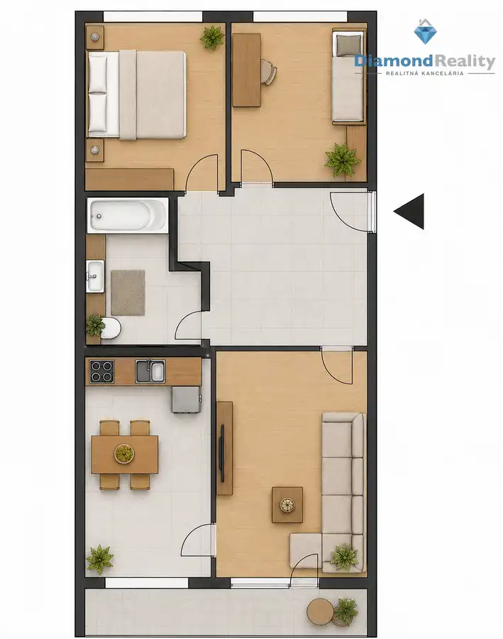

Na predaj 3 izbový byt, Turgenevova, Košice - Juh
Juh, Košice

- Dispozícia3-izbový
- Plocha55 m²
- Poschodie4.
- StavKompletná rekonštrukcia
- VlastníctvoOsobné
O nehnuteľnosti
✨ Moderný 3-izbový byt po kompletnej rekonštrukcii | Turgenevova, Košice – Juh | Stačí sa len nasťahovať!Hľadáte štýlové bývanie bez ďalších investícií alebo výhodnú investičnú nehnuteľnosť v jednej z najžiadanejších lokalít Košíc? Práve ste ju našli!Ponúkame na predaj kompletne zrekonštruovaný a vkusne zariadený 3-izbový byt pražského typu na Turgenevovej ulici, len pár krokov od Starej nemocnice a v pešej dostupnosti administratívnych centier. Táto lokalita spája výbornú občiansku vybavenosť, množstvo zelene a skvelú dostupnosť do centra mesta.🏡 Základné informácie:Výmera: 55 m² - Dômyselne riešená diskozícia s pocitom priestoru väčšieho bytu. Poschodie: 4/7Zateplený bytový dom s novým výťahomPriestranná lodžia s krásnym výhľadom na mestoPivnica v suteréneKumbál na chodbeDispozícia bytu:✔️ vstupná chodba✔️ moderná kuchyňa prepojená s obývacou izbou s výstupom na lodžiu✔️ dve samostatné spálne✔️ kúpeľňaByt prešiel kompletnou a kvalitnou rekonštrukciou, pri ktorej bol kladený dôraz na moderný dizajn, funkčnosť a kvalitné materiály. Komfort bývania počas horúcich letných dní zabezpečuje klimatizácia.Veľkou výhodou je, že sa predáva kompletne zariadený – súčasťou predaja je všetok vstavaný nábytok, zariadenie aj spotrebiče. Novému majiteľovi tak stačí priniesť si osobné veci a okamžite bývať.🌳 Lokalita, ktorá má budúcnosťOkolie bytového domu ponúka revitalizovaný vnútroblok, množstvo zelene, park a detské ihriská. V pešej dostupnosti sa nachádza Stará nemocnica, administratívne centrá, školy, škôlky, obchody, zastávky MHD aj kompletná občianska vybavenosť.Vďaka svojej polohe je byt ideálnou voľbou nielen na vlastné bývanie, ale aj ako výborná investícia s vysokým potenciálom prenájmu a rastu hodnoty.📸 Možnosť zaslania fotografií na vyžiadanie.💰 Cena: 234 000 €📞 Kontakt na maklérku: Monika Vatrály📱 0905 327 688📧 vatraly@diamondreality.skNeváhajte ma kontaktovať a dohodnite si obhliadku. Rada Vám poskytnem viac informácií a zodpoviem všetky Vaše otázky.
Parametre
- Cena vrátane energií
- Nie
- Druh
- 3 izbový byt
- Dátum zverejnenia
- 19. 08. 2026
- Plocha lodžie
- 6 m²
- Podlažie
- 4
- Stav nehnuteľnosti
- Kompletná rekonštrukcia
- Typ
- Predaj
- Umiestnenie
- Ďalšie nadzemné podlažie
- Vlastníctvo
- Osobné
- Vybavenie
- Lodžia, Pivnica, Verejné parkovanie, Špajza
- Úžitková plocha
- 55 m²